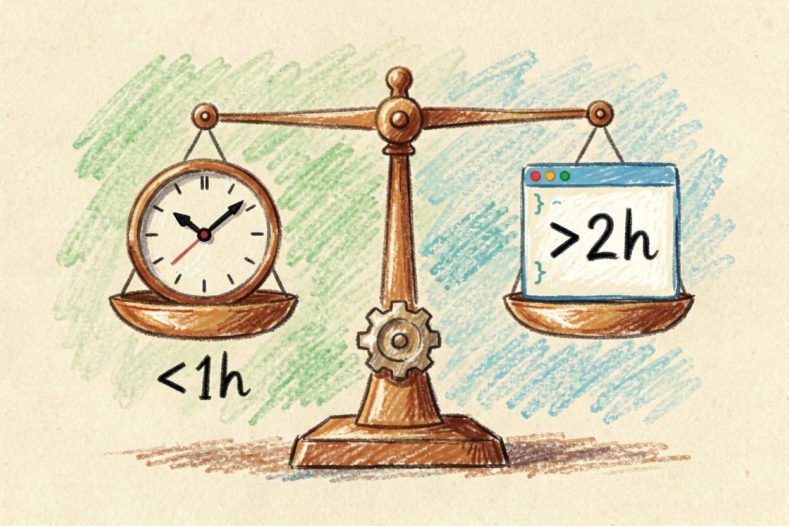

GitHub Copilot 值得买吗？按使用频率算账
Copilot 免费档每月给 2000 次代码补全，轻度够用。每天写代码超 2 小时，Pro 版回本很快。学生直接免费领 Pro。
先说结论：GitHub Copilot 值得买吗？看频率
GitHub Copilot 值得买吗？答案看使用频率。轻度用户每月 2000 次补全就够，免费版能顶住。每天写代码超过两小时的开发者，Pro 版 $10/月回本很快。学生还有免费资格，直接领 Pro。别按别人的体验算，按你自己的频率算。
关键要点 - 免费版每月 2000 次补全，轻度使用够- 重度开发者每天写 2 小时以上，Pro 版更划算- 学生可免费领 Pro，走官方教育页- 价格会变动，订阅前先看官网最新方案
免费版能做什么，不能做什么
免费版每月有 2000 次补全额度，聊天和 Agent 用量有限。写脚本、写测试、日常补全，轻度场景够用。重度开发者半天就耗完额度，这时免费版不够。学生版是另一套逻辑：验证身份后补全不限额。学生问 GitHub Copilot 值得买吗，答案几乎总是值得，因为免费。额度与功能细节，见 GitHub Copilot 官方文档{:target="_blank"}。
想判断免费版够不够，先问自己一个问题：你一天真正写代码几小时。偶尔改改配置、写几个函数，2000 次补全根本用不完。可如果你在写一个完整项目，光函数补全一天就能消耗几百次。加上聊天和 Agent 的用量限制，免费版会明显吃力。这时候再考虑付费，才不算冲动消费。
付费方案对比：Pro / Pro+ / Max 怎么选

付费分三档：Pro 每月 $10，约 1500 AI Credits；Pro+ 每月 $39，约 7000 Credits；Max 每月 $100，约 20000 Credits。价格以官网当前说明为准，最新方案见 GitHub Copilot 定价页{:target="_blank"}。多数个人开发者，Pro 就够。Pro+ 和 Max 给重度使用者或团队。个人开发者问 GitHub Copilot 值得买吗，Pro 档最划算。
三档的差别主要在 Credits 数量，而不是补全质量。补全质量大家都一样，差的是你能用多久。每天一两个小时的重度用户，Pro 的 1500 Credits 勉强够一个月。更高强度的用法，才需要 Pro+ 或 Max。先按自己一个月大概消耗多少算，再挑档位，别直接上最贵的。
按使用场景算账
轻度：每天写代码不到一小时，免费版够，不花钱。中度：每天一两个小时，先试免费版，额度不够再升 Pro。重度：每天两小时以上，Pro 回本很快。团队：多账号统一管理，看 Pro+ 或 Max，先问公司有没有采购。GitHub Copilot 值得买吗，分场景答案不同。用这段脚本自测：
daily_hours = 输入每天写代码小时数
if daily_hours < 1: 推荐 = "免费版"
elif daily_hours < 2: 推荐 = "免费版或 Pro"
else: 推荐 = "Pro 起步"算完这笔账你会发现，大多数人的答案其实很明确。学生几乎无脑选免费，重度开发者选 Pro，只有团队或极限使用者才需要往上走。GitHub Copilot 值得买吗这个问题，本质上是在问你自己每天花多少时间写代码。
什么情况下先别买
几乎不写代码，免费版够用，别买。公司已有企业版，先问公司，别重复付费。想先试，学生直接领免费 Pro。拿不准的时候，先把AI 编程助手哪个好这篇横评看一遍，再决定要不要花钱。总结一句：GitHub Copilot 值得买吗，这三类人的答案都是先别买。
别急着下单，GitHub Copilot 值得买吗，先算频率再决定。
本文信息核对于 2026-08-06。AI 产品的价格、免费额度与功能变动频繁，实际以各工具官网当前说明为准。